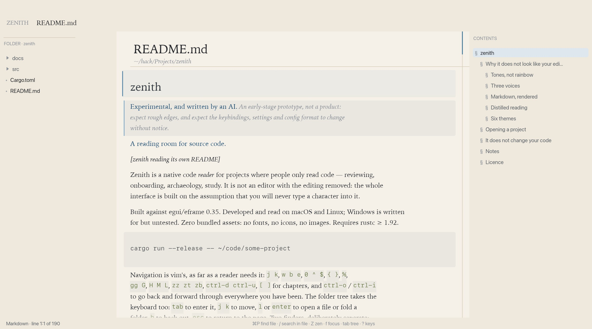
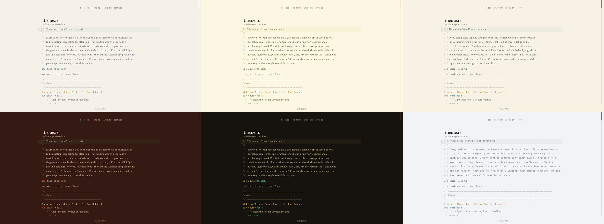

Zenith
A reading room for source code.
A native code reader for projects where people read code rather than write it — reviewing, onboarding, archaeology, study. Not an editor with the editing removed: the whole interface assumes you will never type a character into it.

Run it
git clone https://github.com/dovidio/zenith
cd zenith
cargo run --release -- ~/code/some-projectBuilt against egui/eframe 0.35. Developed and read on macOS and Linux; Windows is written for but untested. Zero bundled assets: no fonts, no icons, no images. Requires rustc ≥ 1.92.
Why it does not look like your editor
- Indentation is not whitespace. It is drawn as whisper hairlines in a gutter, one per nesting level, so you feel the shape of a block instead of counting spaces.
- Comments are prose. The only part of a source file written in English is the only part set in a reading face: a serif, italic, in the faintest ink.
- Long lines wrap and declare themselves, marked with
↳in the margin, so you never scroll sideways. - Tones, not rainbow. Each token class sits on a single muted tonal ladder instead of a palette of six competing hues.
- Attention is a gradient. The focus lens dims everything except the block you are reading, like the page coming forward.
Six themes
Each is a tonal ladder plus a page, named for something it resembles — a theme is a place, not a colour swatch. 1–6 pick one, here as in the app.

Markdown, as a document
A Markdown file is rendered as the document it describes: headings at heading size,
emphasis in the italic face, tables as grids with their columns aligned, quotations on a
band with a rule down their edge, and fenced code untouched — a # in a code
block is not a heading. x toggles back to the source, because
sometimes the source is what you came to read.
It does not change your code
Files are opened with std::fs::read; there is no save, no lockfile, and no
cache directory inside the repository. Its own state — theme, typography, measure,
reading positions, bookmarks — lives in ~/.config/zenith/, and if that is
not writable it degrades to an in-memory session.